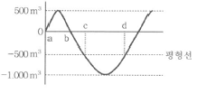
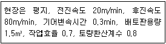
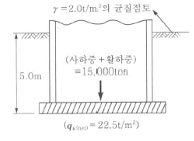
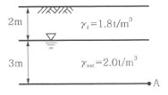
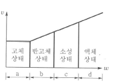
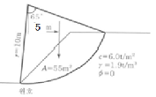
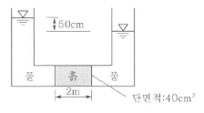

건설재료시험기사 (2013-09-28 기출문제)
1과목: 콘크리트공학
1. 물-결합재비가 45%이고 단위시멘트량 400kg/m3, 시멘트의 비중 3.1, 공기량 2%인 콘크리트의 단위골재량의 절대부피는?
- 0.48kg/m3
- 0.54kg/m3
- 0.67kg/m3
- 0.72kg/m3
(정답률: 56%)

2. 고강도 콘크리트에 대한 일반적인 설명으로 틀린 것은?
- 고강도 콘크리트의 설계기준 압축강도는 일반적으로 40MPa 이상으로 하며, 고강도 경량골재 콘크리트는 27MPa 이상으로 한다.
- 고강도 콘크리트의 워커빌리티 확보를 위해 공기연행(AE) 감수제를 사용함을 원칙으로 한다.
- 고강도 콘크리트의 제조 시 잔골재율은 소요의 워커빌리티를 얻도록 시험에 의하여 결정하여야 하며, 가능한 적게 하도록 한다.
- 고강도 콘크리트의 제조 시 단위 시멘트량은 소요의 워커빌리티 및 강도를 얻을 수 있는 범위 내에서 가능한 한 적게 되도록 시험에 의해 정하여야 한다.
(정답률: 65%)
3. 콘크리트 구조물의 유지관리 중 일상점검 및 정기점검에 해당하지 않는 것은?
- 균열이나 박락 여부
- 누수 부위 확인
- 비파괴 검사
- 처짐 또는 변위상태
(정답률: 75%)
4. 콘크리트 진동다지기에서 내부진동기 사용방법의 표준으로 틀린 것은?
- 2층 이상으로 나누어 타설한 경우 상층콘크리트의 다지기에서 내부진동기는 하층의 콘크리트 속으로 찔러 넣으면 안된다.
- 내부진동기의 삽입간격은 일반적으로 0.5m 이하로 하는 것이 좋다.
- 1개소당 진동시간은 다짐할 때 시멘트 페이스트가 표면 상부로 약간 부상하기 까지 한다.
- 내부진동기는 콘크리트를 횡방향으로 이동시킬 목적으로 사용하지 않아야 한다.
(정답률: 71%)
5. 23회의 압축강도 시험실적으로부터 구한 표준편차가 3.0MPa이었다. 콘크리트의 설계 기준 압축강도가 28MPa인 경우 배합강도는?(단, 시험횟수 20회일 때의 표준편차의 보정계수는 1.08이고, 25회일 때의 표준편차의 보정계수는 1.03이다.)
- 30MPa
- 31MPa
- 32MPa
- 33MPa
(정답률: 22%)
6. 콘크리트의 건조수축량에 관한 다음 설명 중 옳은 것은?
- 단위 굵은골재량이 많을수록 건조수축량은 크다.
- 분말도가 큰 시멘트일수록 건조수축량은 크다.
- 습도가 낮을수록 온도가 높을수록 건조 수축량은 작다.
- 물-결합재비가 동일할 경우 단위수량의 차이에 따라 건조수축량이 달라지지는 않는다.
(정답률: 60%)
7. 프리스트레스트 콘크리트에 요구되는 성질에 해당되지 않는 것은?
- 건조수축의 감소
- 크리프의 감소
- 물-결합재비 증가
- 콘크리트 압축강도의 증가
(정답률: 64%)
8. 서중 콘크리트에 대한 설명으로 틀린 것은?
- 하루의 평균기온이 25℃를 초과하는 것이 예상되는 경우 서중 콘크리트로 시공하여야 한다.
- 콘크리트는 비빈 후 1.5시간 이내에 타설하여야 하며, 지연형 감수제를 사용한 경우라도 2시간 이내에 타설하는 것을 원칙으로 한다.
- 콘크리트 재료의 온도를 낮추어서 사용 한다.
- 콘크리트를 타설할 때의 콘크리트 온도는 35℃이하이어야 한다.
(정답률: 63%)
9. 프리스트레스트 콘크리트에 대한 설명으로 틀린 것은?
- 굵은골재의 최대치수는 보통의 경우 40mm를 표준으로 한다. 그러나 부재치수, 철근간격, 펌프압송 등의 사정에 따라 25mm를 사용할 수도 있다.
- PSC 그라우트에 사용하는 혼화제는 블리딩 발생이 없는 타입의 사용을 표준으로 한다.
- 프리스트레싱할 때의 콘크리트 압축강도는 프리텐션방식으로 시공할 경우 30MPa 이상이어야 한다.
- 서중 시공의 경우에는 지연제를 겸한 감수제를 사용하여 그라우트 온도의 상승이나 그라우트가 급결되지 않도록 하여야 한다.
(정답률: 69%)
10. 콘크리트 타설에 대한 설명 중 옳지 않은 것은?
- 콘크리트를 2층 이상으로 나누어 타설할 경우, 상층의 콘크리트 타설은 원칙적으로 하층의 콘크리트가 굳기 시작하기 전에 해야한다.
- 콘크리트 타설 도중에 표면에 떠올라 고인 블리딩수가 있을 경우에는 표면에 도랑을 만들어 제거하여야 한다.
- 한 구획 내의 콘크리트는 타설이 완료될때까지 연속해서 타설해야 한다.
- 콘크리트는 그 표면이 한 구획 내에서는 거의 수평이 되도록 타설하는 것을 원칙으로 한다.
(정답률: 83%)
11. 거푸집의 높이가 높을 경우, 재료분리를 막고 상부의 철근 또는 거푸집에 콘크리트가 부착하여 경화하는 것을 방지하기 위해 거푸집에 투입구를 설치하거나, 연직슈트 또는 펌프배관의 배출구를 타설면 가까운 곳까지 내려서 콘크리트를 타설해야 한다. 이 경우 슈트, 펌프 배관, 버킷, 호퍼 등의 배출구와 타설 면까지의 높이는 최대 몇 m 이하를 원칙으로 하는가?
- 0.5m
- 1.0m
- 1.5m
- 2.0m
(정답률: 84%)
12. 굳지 않은 콘크리트의 성질에 대한 설명으로 잘못된 것은?
- 단위 시멘트량이 큰 콘크리트일수록 성형성이 좋다.
- 온도가 높을수록 슬럼프는 감소된다.
- 둥근 입형의 잔골재를 사용한 콘크리트 는 모가 진 부순모래를 사용한 것에 비해 워커빌리티가 나쁘다.
- 일반적으로 플라이 애시를 사용한 콘크리트는 워커빌리티가 개선된다.
(정답률: 83%)
13. 숏크리트에 대한 설명으로 틀린 것은?
- 일반 숏크리트의 장기 설계기준 압축강도는 재령 28일로 설정한다.
- 습식 숏크리트는 배치 후 60분 이내에 뿜어붙이기를 실시하여야 한다.
- 숏크리트의 초기강도는 재령 3시간에서 1.0~3.0MPa을 표준으로 한다.
- 굵은골재의 최대치수는 25mm의 것이 널리 쓰인다.
(정답률: 64%)
14. 콘크리트용 화학혼화제의 일반적인 특성에 관한 다음 설명 중 잘못된 것은?
- 고성능 공기연행 감수제는 감수효과가 현저히 크지만, 시간경과와 더불어 콘크리트 슬럼프가 공기연행제보다 저하되기 쉽다.
- 공기연행제는 독립된 미세한 공기포를 연행시키는 기능을 갖고, 콘크리트의 동결융해 저항성을 현저히 증대시킨다.
- 감수제는 시멘트 입자를 정전기적인 반발작용에 따라 분산시켜 콘크리트의 단위수량을 감소시킨다.
- 공기연행 감수제는 시멘트 분산작용과 공기연행작용을 병행하여 감수효과가 크다.
(정답률: 45%)
15. 콘크리트 구조물의 온도 균열에 대한 시공상의 대책으로 틀린 것은?
- 단위시멘트량을 적게 한다.
- 1회의 콘크리트 타설 높이를 줄인다.
- 수축이음부를 설치하고, 콘크리트 내부 온도를 낮춘다.
- 기존의 콘크리트로 새로운 콘크리트의 온도에 따른 이동을 구속시킨다.
(정답률: 62%)
16. 공기연행 콘크리트의 공기량에 대한 설명으로 옳은 것은?(단, 굵은골재의 최대치수는 40mm를 사용한 일반 콘크리트로서 보통 노출인 경우)
- 4.0%를 표준으로 하며, 그 허용오차는 ±1.0%로 한다.
- 4.5%를 표준으로 하며, 그 허용오차는 ±1.0%로 한다.
- 4.0%를 표준으로 하며, 그 허용오차는 ±1.5%로 한다.
- 4.5%를 표준으로 하며, 그 허용오차는 ±1.5%로 한다.
(정답률: 79%)
17. 굵은골재의 최대치수에 관한 설명으로 맞는 것은?
- 일반적인 구조물인 경우 15mm 이하를 표준으로 한다.
- 단면이 큰 구조물인 경우 50mm 이하를 표준으로 한다.
- 철근콘크리트의 경우 부재의 최소치수의 1/5을 초과해서는 안 된다.
- 철근의 최소 수평, 수직 순간격의 4/3를 초과해서는 안 된다.
(정답률: 49%)
18. 휨강도 시험을 실시하기 위하여 150×150×530mm의 장방형 공시체를 3등분점 하중법에 의해 시험한 결과 지간방향 중심선의 3등 분점 사이에서 재하 하중(P)이 35kN에서 공시체가 파괴되었다. 공시체의 휨강도는 얼마인가?(단, 지간 길이는 45cm이다.)
- 4.7MPa
- 4.5MPa
- 5MPa
- 5.5MPa
(정답률: 40%)
19. 콘크리트의 품질관리에 관한 설명 중 맞지 않는 것은?
- 시험값에 의하여 콘크리트의 품질을 관리할 경우에는 관리도 및 히스토그램을 사용하는 것이 좋다.
- 압축강도에 의한 콘크리트 관리는 일반적으로 28일 압축강도에 의해 콘크리트를 관리한다.
- 물-결합재비의 1회 시험 값은 동일배치에서 취한 2개 시료의 물-결합재비의 평균값으로 한다.
- 압축강도의 1회 시험 값은 동일배치에서 취한 3개 시료의 압축강도의 평균값으로 한다.
(정답률: 41%)
20. 해양 콘크리트에 대한 설명 중 옳지 않은 것은?
- 해양 콘크리트 구조물에 쓰이는 콘크리트의 설계기준 압축강도는 30MPa 이상으로 한다.
- 단위결합재량을 작게 하면 해수 중의 각종 염류의 화학적 침식, 콘크리트 속의 강재 부식 등에 대한 저항성이 커진다.
- 해수에 의한 침식이 심한 경우에는 폴리머 시멘트 콘크리트와 폴리머 콘크리트 또는 폴리머 함침 콘크리트 등을 사용할 수 있다.
- 심한 기상작용에 저항성을 높이기 위해 AE감수제 또는 고성능 감수제를 사용한다.
(정답률: 52%)
2과목: 건설시공 및 관리
21. 폭우시 옹벽 배면에는 침투수압이 발생되는데 이 침투수에 의한 중요 영향으로 옳지 않은 것은?
- 활동면에서의 양압력 증가
- 포화에 의한 흙의 무게 증가
- 옹벽 저면에서의 양압력 증가
- 수평 저항력의 증대
(정답률: 87%)
22. 숏크리트의 리바운드량을 감소시키는 방법으로 옳지 않은 것은?
- 시멘트량을 감소시킨다.
- 벽면과 지각으로 쏜다.
- 골재를 13mm 이하로 한다.
- 압력을 일정하게 한다.
(정답률: 83%)
23. 네트워크 공정표의 주공정선(critical path)에 관한 설명으로 옳지 않은 것은?
- 크리티컬 패스는 2개 이상이 될 수 있다.
- 크리티컬 패스상에서 총여유시간은 0이다.
- 공정단축은 이 경로에 착안하게 된다.
- 공정표의 개시점에서 종료점까지의 경로 중에서 시간적으로 가장 짧은 경로이다.
(정답률: 74%)
24. 아스팔트 콘크리트 포장의 소성변형(rutting)에 대한 설명 중 옳지 않은 것은?
- 노면에 차량의 바퀴가 집중적으로 통과하여 움푹 파인 자국이다.
- 아스팔트의 양이 많거나 여름철 이상 고온 시 발생하기 쉽다.
- 변형된 곳에 물이 고여 수막현상으로 주행에 위험을 초래할 수 있다.
- 골재 입도의 최대 입경이 크거나 침입도가 적은 아스팔트를 사용하게 되면 발생한다.
(정답률: 77%)
25. 다음 토적곡선의 a-d구간에서 발생하는 토량은?

- 과잉토량 500
- 부족토량 500
- 과잉토량 1,000
- 부족토량 1,000
(정답률: 68%)
26. 공정관리 기법인 PERT 기법을 설명한 것 중 틀린 것은?
- 개발은 미군수국에 의하여 개발되었다.
- 신규사업, 비반복 사업에 많이 이용된다.
- 3점 시간 추정법을 사용한다.
- Activity 중심의 일정으로 계산한다.
(정답률: 76%)
27. 배수로의 설계 시 유의해야 할 사항이 아닌 것은?
- 집수면적이 커야 한다.
- 집수지역은 다소 깊어야 한다.
- 배수단면은 하류로 갈수록 커야 한다.
- 유하속도가 느려야 한다.
(정답률: 83%)
28. 콘크리트 포장에서 맹줄눈, 맞댄줄눈, 교합줄눈 등을 횡단하여 콘크리트 슬래브에 삽입 한 이형 봉강으로 줄눈이 벌어지거나 층이 지는 것을 막는 작용을 하는 것은?
- 타이바
- 슬립바
- 루팅
- 컬로코트
(정답률: 73%)
29. 교각의 우물통 기초를 시공하려고 한다. 주면마찰력이 314t, 지반의 극한지지력이 20t/m2, 기초 단면적이15m2, 수중부력이 10t일 때 우물통이 침하하기 위한 최소 상부하중(자중+재하중)은?
- 510t
- 624t
- 730t
- 745t
(정답률: 59%)
30. 착암기로 표준암을 천공하여 60cm/min의 천공속도를 얻었다. 천공깊이 3m, 천공수 15공을 한 대의 착암기로 암반을 천공할 경우 소요되는 총 소요시간을 구하면?(단, 표준암에 대한 천공 대상암의 암석항력계수 1.35, 작업조건계수 0.6, 순 천공시각이 천공시간에 점유하는 비율 0.65)
- 2.0시간
- 2.4시간
- 3.0시간
- 3.4시간
(정답률: 57%)
31. TBM(Tunnel Boring Machine)공법을 이용하여 암석을 굴착하여 터널 단면을 만들려고 한다. TBM 공법의 단점이 아닌 것은?
- 설비투자액이 고가이므로 초기 투자비가 많이 든다.
- 본바닥 변화에 대하여 적응이 곤란하다.
- 지반에 따라 적용범위에 제약을 받는다.
- lining 두께가 두꺼워야 한다.
(정답률: 70%)
32. Boiling 현상은 주로 어떤 지반에 많이 생기는가?
- 모래지반
- 사질점토지반
- 보통토
- 점토질지반
(정답률: 63%)
33. 전면에 달린 배토판을 좌하, 우하로 기울어 지게 하여 작업하는 것으로 경사면 굴착이나 도랑파기 작업을 할 수 있는 도저는?
- 틸트 도저
- 스트레이트 도저
- 앵글 도저
- 레이크 도저
(정답률: 66%)
34. 보통토(사질토)를 재료로 하여36,000m3의 성토를 하는 경우 굴착 및 운반토량(m3)은 얼마인가?(단, 토량환산계수 L=1.25, C=0.90)
- 굴착토량=40,000, 운반토량=50,000
- 굴착토량=32,400, 운반토량=40,500
- 굴착토량=28,800, 운반토량=50,000
- 굴착토량=32,400, 운반토량=45,000
(정답률: 64%)
35. 다음 중 비계를 이용하지 않는 강트러스교의 가설공법이 아닌 것은?
- 새들(saddle)공법
- 캔틸레버(cantilever)식 공법
- 케이블(cable)식 공법
- 부선(pontoon)식 공법
(정답률: 63%)
36. P.C 말뚝에 관한 다음 설명 중 틀린 것은?
- 원심력 철근콘크리트 말뚝에 비하여 고가이다.
- 휨을 받을 때 변형량이 적다.
- 이음부의 시공이 어렵고 신뢰성이 없다.
- 균열이 잘 생기지 않으므로 강재가 부식하지 않고 내구성이 크다.
(정답률: 62%)
37. 수직굴착 후 그 속에 현장 콘크리트를 타설 하여 만든 원형기초인 피어기초의 시공에 대한 설명으로 틀린 것은?
- 굴착한 벽이 무너지지 않는, 굳기가 중간 정도의 점토 지반의 굴착에 이용되는 공법으로 깊이가 약 1.2~1.8m의 원통구멍을 인력으로 굴착한 후 반원형의 강철링을 조립하여 유지한 후 굴착하는 방법을 시카고 공법이라 한다.
- 케이싱 튜브를 사용하지 않고 회전식 버킷을 사용하는 어스드릴공법에서는 굴착 후 철근 삽입 시 철근이 따라 뽑히는 공상현상이 일어난다.
- 정수압으로 구멍의 벽을 유지하면서 물의 순환을 이용하여 드릴파이프의 끝에 설치한 특수한 비트의 회전에 의해서 굴착한 토사를 물과 함께 배출하고 소정의 깊이까지 굴착하는 공법을 RCD 공법(Reverse circulation)이라 한다.
- 굴착 내부의 흙막이로서 강재원통을 사용하는 것으로 연약한 점토에 적당하며, 1.8~5.0m의 강재 원통을 땅속에 박고 내부의 흙을 인력으로 굴착한 후, 다시 다음의 원통을 받는 공법을 Gow 공법이라 한다.
(정답률: 56%)
38. 지중연속벽 공법에 관한 설명 중 옳지 않은 것은?
- 주변지반의 침하를 방지할 수 있다.
- 시공 시 소음, 진동이 크다.
- 벽체의 강성이 높고 지수성이 좋다.
- 큰 지지력을 얻을 수 있다.
(정답률: 60%)
39. 물의 흐름을 측정하거나 유량을 조절하기 위해 수로를 횡단하여 설치하는 하천공작물은?
- 도류
- 수문
- 잠거
- 위어
(정답률: 65%)
40. 5톤 용량의 불도저를 이용하여 절토한 흙을 20m 운반할 때 주어진 조건을 이용하여 시공능력(m3/hr)을 구하면?

- 14.6m3/hr
- 16.6m3/hr
- 32.5m3/hr
- 20.6m3/hr
(정답률: 45%)
3과목: 건설재료 및 시험
41. 섬유보강 콘크리트를 사용하였을 때 콘크리트의 성질 중 개선되는 것이 아닌 것은?
- 균열에 대한 저항
- 내구성 증가
- 내충격성 증가
- 유동성 증가
(정답률: 65%)
42. 거푸집에 다져 넣을 수 있고 거푸집을 제거하면 천천히 형상이 변하기는 하지만 허물어 지거나 재료가 분리하거나 하는 일이 없는 굳지 않은 콘크리트의 성질은?
- 피니셔빌리티
- 반죽질기
- 워커빌리티
- 성형성
(정답률: 60%)
43. 강에서 탄소의 함유량이 증가될 때 변화되는 강의 성질에 대한 설명으로 틀린 것은?
- 연신율이 작아진다.
- 인장강도가 증가된다.
- 경도가 증가된다.
- 항복점이 작아진다.
(정답률: 53%)
44. 사면의 안전율을 높이기 위한 대책으로 가장 거리가 먼 것은?
- 표면 처리
- 기울기 저감
- 보강재 삽입
- 그라우팅 처리
(정답률: 50%)
45. 시방배합상의 잔골재의 양은 500kg/m3이고 굵은골재의 양은 1,000kg/m3이다. 표면 수량은 각각 5%와 3%이었다. 현장배합으로 환산한 잔골재와 굵은골재의 양은?
- 잔골재-525kg/m3, 굵은골재-1,030kg/m3
- 잔골재-475kg/m3, 굵은골재-970kg/m3
- 잔골재-470kg/m3, 굵은골재-975kg/m3
- 잔골재-520kg/m3, 굵은골재-1,025kg/m3
(정답률: 70%)
46. 플라이 애시를 사용한 콘크리트에 대한 설명 중 옳지 않은 것은?
- 워커빌리티가 좋아진다.
- 초기강도가 크고 장기강도는 다소 작다.
- 수화열이 작고 혼합량이 증가하면 응결이 지연된다.
- 수밀성 개선과 단위수량을 감소시킨다.
(정답률: 53%)
47. 어떤 골재의 밀도가 2.60g/cm3이고 단위용적질량은 1.60t/m3이다. 이때 이 골재의 공극률(%)은 얼마인가?
- 38.5%
- 43.2%
- 53.5%
- 63.5%
(정답률: 58%)
48. 마샬 시험방법에 따라 아스팔트 콘크리트 배합설계를 진행할 경우 포화도는 몇%인가?[단, 아스팔트 밀도(Ga) : 1.030g/cm3, 아스팔트의 함량(A) : 6.3%, 공시체의 실측 밀도(d) : 2.435g/cm3,공시체의 공극률(V) : 4.8%]
- 58%
- 66%
- 71%
- 76%
(정답률: 42%)
49. 연화점이 높고 방수공사용으로 많이 사용되고 석유계 아스팔트는?
- 록 아스팔트
- 레이크 아스팔트
- 블론 아스팔트
- 스트레이트 아스팔트
(정답률: 62%)
50. 도폭선에서 심약(心藥)으로 사용되는 것은?
- 흑색화약
- 질화납
- 뇌홍
- 면화약
(정답률: 58%)
51. 석재에 관한 설명 중 옳지 않은 것은?
- 암석을 구성하고 있는 조암광물의 접합상태에 따라 생기는 눈의 모양을 석리라 한다.
- 암석 특유의 천연적으로 갈라진 금을 절리라 한다.
- 변성암에서 주로 생기는 것으로 방향은 불규칙하고 작게 갈라지는 것을 벽개라 한다.
- 갈라지기 쉬운 석재의 면을 석목 또는 돌눈이라 한다.
(정답률: 50%)
52. 건설재료로 사용되는 목재 중 합판의 특성에 대한 다음 설명 중 틀린 것은?
- 함수율 변화에 의한 신축변형은 방향성을 가지며 그 변형량이 크다.
- 통나무판에 비해서 얇은 판으로 높은 강도를 얻을 수 있다.
- 곡면가공을 하여도 균열의 발생이 적다.
- 표면가공으로 흡음효과를 얻을 수 있고 의장적 효과를 얻을 수 있다.
(정답률: 45%)
53. 시멘트 모르타르 인장강도 시험을 할 때 시멘트 : 표준사의 혼합비율은?
- 무게비 1 : 3
- 부피비 1 : 3
- 무게비 1 : 2.7
- 부피비 1 : 2.7
(정답률: 60%)
54. 목재에 대한 설명으로 틀린 것은?
- 보통 기건상태의 함수율은 13~18%정도 이다.
- 목재의 기건비중은 1.55~1.85 정도이다.
- 목재의 자연건조법에는 공기건조법, 수침법 등이 있다.
- 목재의 함수율은 일반적으로 절건비중의 25~35%범위에 있고 평균 30% 정도이다.
(정답률: 40%)
55. 블리딩에 관한 사항 중 잘못된 것은?
- 블리딩이 많으면 레이턴스도 많아지므로 콘크리트의 이음부에서는 블리딩이 큰 콘크리트는 불리하다.
- 시멘트의 분말도가 높고 단위수량이 적은 콘크리트는 블리딩이 작아진다.
- 블리딩이 큰 콘크리트는 강도와 수밀성이 작아지나 철근콘크리트에서는 철근과의 부착을 증가시킨다.
- 콘크리트 치기가 끝나면 블리딩이 발생하며 대략 2~4시간에 끝난다.
(정답률: 67%)
56. 굵은골재에 대한 설명으로 옳은 것은?
- 5mm 체에 거의 다 남은 골재
- 5mm 체를 통과하고 0.08mm 체에 남는 골재
- 10mm 체에 거의 다 남는 골재
- 20mm 체에 거의 다 남는 골재
(정답률: 74%)
57. 골재의 흡수율에 대한 설명으로 맞는 것은?
- 절대건조상태에서 표면건조포화상태까지 흡수된 수량을 절대건조상태에 대한 골재질량의 백분율로 나타낸 것
- 공기 중 건조상태에서 표면건조포화상태까지 흡수된 수량을 공기 중 건조상태에 대한 골재질량의 백분율로 나타낸 것
- 표면건조포화상태에서 습윤상태까지 흡수된 수량을 표면건조포화상태에 대한 골재질량의 백분율로 나타낸 것
- 절대건조상태에서 표면건조포화상태까지 흡수된 수량을 질량으로 나타낸 것
(정답률: 52%)
58. 콘크리트용 골재의 품질 판정에 대한 설명 중 틀린 것은?
- 체가름 시험을 통하여 골재의 입도를 판정할 수 있다.
- 골재의 입도가 일정한 경우 실적률을 통하여 골재 입형을 판정할 수 있다.
- 황산나트륨 용액에 골재를 침수시켜 건조시키는 조작을 반복하여 골재의 안정성을 판정할 수 있다.
- 조립률로 골재의 입형을 판정할 수 있다.
(정답률: 50%)
59. 아스팔트의 인화점 및 연소점 시험에 대한 설명으로 잘못된 것은?
- 인화점과 연소점은 ℃로 나타내며, 정수치로 보고한다.
- 인화점은 연소점보다 3~6℃ 정도 높다.
- 일반적으로 가열속도가 빠르면 인화점은 떨어진다.
- 사람과 장치가 같을 때 2회의 시험결과 에 있어 그 차가 8℃를 넘지 않을 때에 그 평균값을 취한다.
(정답률: 56%)
60. 고성능 감수제를 사용한 콘크리트에 대한 설명 중 틀린 것은?
- 고성능 감수제는 단위수량을 20~30%정도 크게 감소시킬 수 있어서 고강도 콘크리트 제조에 주로 사용된다.
- 고성능 감수제 사용 콘크리트는 일반적으로 믹싱 후 경과시간 2시간까지는 슬럼프 손실현상이 거의 없다.
- 고성능 감수제의 첨가량이 증가할수록 워커빌리티는 증가하지만 과도하게 사용하면 재료분리가 발생한다.
- 고성능 감수제를 사용하면 수량이 대폭 감소되기 때문에 건조수축이 적다.
(정답률: 36%)
4과목: 토질 및 기초
61. 그림과 같은 20×30m 전면기초인 부분 보상기초(partically compensated foundation)의 지지력 파괴에 대한 안전율은?

- 3.0
- 2.5
- 2.0
- 1.5
(정답률: 48%)
62. 내부마찰각이 30˚, 단위중량이 1.8t/m3인 흙의 인장균열 깊이가 3m일 때 점착력은?
- 1.56
- 1.67
- 1.75
- 1.81
(정답률: 33%)
63. 그림과 같은 점성토 지반의 토질실험결과 내부마찰각 ø=30°, 점착력 c=1.5t/m2일 때 A점의 전단강도는?

- 4.31t/m2
- 4.81t/m2
- 5.31t/m2
- 5.81t/m2
(정답률: 50%)
64. 다음의 연약지반 개량공법 중 지하수위를 저하시킬 목적으로 사용되는 공법은?
- 샌드 드레인(Sand drain)공법
- 페이퍼 드레인(Paper drain)공법
- 치환 공법
- 웰 포인트(Well Point)공법
(정답률: 44%)
65. 다음 그림에서 액성지수(LI)가 0＜LI＜1인 구간은?(단, v : 흙의 부피, W : 함수비(%))

- a
- b
- c
- d
(정답률: 50%)
66. 그림과 같은 사면에서 활동에 대한 안전율은?

- 1.30
- 1.50
- 1.70
- 1.90
(정답률: 29%)
67. 연약지반에 흙댐을 축조할 때에 어느 위치에서 공극수압의 변화를 측정하였다. 흙댐을 축조한 직후의 공극수압이 10t/m2이었고 5년 후에 2t/m2이었을 때 이측점의 압밀도는?
- 80%
- 40%
- 20%
- 10%
(정답률: 56%)
68. 성토된 하중에 의해 서서히 압밀이 되고 파괴도 완만하게 일어나 간극수압이 발생되지 않거나 측정이 곤란한 경우 실시하는 시험은?
- 비압밀 비배수 전단시험(UU 시험)
- 압밀 배수 전단시험(CD 시험)
- 압밀 비배수 전단시험(CU 시험)
- 급속 전단시험
(정답률: 33%)
69. 다음의 연약지반 개량공법 중에서 점성토지반에 쓰이는 공법은?
- 폭파다짐공법
- 생석회 말뚝공법
- compozer 공법
- 전기충격공법
(정답률: 57%)
70. 현장다짐을 실시한 후 들밀도시험을 수행하였다. 파낸 흙의 체적과 무게가 각각 365.0cm3, 745g이었으며, 함수비는 12.5%였다. 흙의 비중이 2.65이며, 실내표준다짐 시 최대건조단위 중량이 vdmax=1.90t/m3일 때 상대다짐도는?
- 88.7%
- 93.1%
- 95.3%
- 97.8%
(정답률: 40%)
71. 유선망을 작성하여 침투수량을 결정할 때 유선망의 정밀도가 침투수량에 큰 영향을 끼치지 않는 이유는?
- 유선망은 유로의 수와 등수두면의 수의 비에 좌우되기 때문이다.
- 유선망은 등수두선의 수에 좌우되기 때문이다.
- 유선망은 유선의 수에 좌우되기 때문이다.
- 유선망은 투수계수에 좌우되기 때문이다.
(정답률: 37%)
72. 그림에서 흙의 단면적이 40cm2이고 투수계수가 0.1cm/sec일 때 흙속을 통과하는 유량은?

- 1cm3/hr
- 1cm3/sec
- 100cm3/hr
- 100cm3/sec
(정답률: 48%)
73. Paper drain 설계 시 Drain paper의 폭이 10cm, 두께가 0.3cm일 떄 Drain paper의 등치환산원의 직경이 얼마이면 Sand Drain과 동등한 값으로 볼 수 있는가?(단, 형상계수 0.75)
- 5cm
- 8cm
- 10cm
- 15cm
(정답률: 44%)
74. 흙의 다짐에 관한 사항 중 옳지 않은 것은?
- 최적 함수비로 다질 때 최대 건조 단위중량이 된다.
- 조립토는 세립토보다 최대 건조 단위중량이 크다.
- 점토를 최적함수비보다 작은 건조측 다짐을 하면 흙구조가 면모구조로, 습윤측 다짐을 하면 이산구조가 된다.
- 강도증진을 목적으로 하는 도로 토공의 경우 습윤측 다짐을, 차수를 목적으로 하는 심벽재의 경우 건조측 다짐이 바람직하다.
(정답률: 31%)
75. 표준관입시험에 관한 설명 중 옳지 않은 것은?
- 표준관입시험의 N값으로 모래지반의 상대밀도를 추정할 수 있다.
- N값으로 점토지반의 연경도에 관한 추정이 가능하다.
- 지층의 변화를 판단할 수 있는 시료를 얻을 수 있다.
- 모래지반에 대해서도 흐트러지지 않은 시료를 얻을 수 있다.
(정답률: 50%)
76. Mohr의 응력원에 대한 설명 중 틀린 것은?
- Mohr의 응력원에 접선을 그었을 때, 종축과 만나는 점이 점착력 C이고, 그 접선의 기울기가 내부마찰각 ø이다.
- Mohr의 응력원이 파괴포락선과 접하지 않을 경우 전단파괴가 발생됨을 뜻한다.
- 비압밀비배수 시험조건에서 Mohr의 응력원은 수평축과 평행한 형상이 된다.
- Mohr의 응력원에서 응력상태는 파괴포락선 위쪽에 존재할 수 없다.
(정답률: 43%)
77. 함수비 17%인 흙 2,300g이 있다. 이 흙의 함수비를 25%로 증가시키려면 얼마의 물을 가해야 하는가?
- 157g
- 230g
- 345g
- 757g
(정답률: 40%)
78. 부마찰력에 대한 설명으로 틀린 것은?
- 부마찰력을 줄이기 위하여 말뚝표면을 아스팔트 등으로 코팅하여 타설한다.
- 지하수의 저하 또는 압밀이 진행중인 연약지반에서 부마찰력이 발생한다.
- 점성토 위에 사질토를 성토한 지반에 말뚝을 타설한 경우에 부마찰력이 발생한다.
- 부마찰력은 말뚝을 아래 방향으로 작용하는 힘이므로 결국에는 말뚝의 지지력을 증가시킨다.
(정답률: 50%)
79. 모래나 점토같은 입상재료(粒狀材料)를 전단하면 Dilatancy현상이 발생하며 이는 공극 수압과 밀접한 관계가 있다. 다음에 설명한 이들의 관계 중 옳지 않은 것은?
- 과압밀 점토에서는 (+)Dilatancy에 부(-)의 공극 수압이 발생한다.
- 정규압밀 점토에서는 (-)Dilatancy에 정(+)의 공극수압이 발생한다.
- 밀도가 큰 모래에서는 (+)Dilatancy가 일어난다.
- 느슨한 모래에서는(+)Dilatancy가 일어난다.
(정답률: 50%)
80. 어떤 모래의 비중이 2.64이고 간극비가 0.75일 때 이 모래의 한계동수경사는?
- 0.45
- 0.64
- 0.94
- 1.52
(정답률: 49%)
단위골재량의 절대부피 = (1 - 물-결합재비 - 공기량) / 골재의 비중
여기에 주어진 값들을 대입하면,
단위골재량의 절대부피 = (1 - 0.45 - 0.02) / 2.5 = 0.53
단위골재량의 절대부피는 소수점 둘째자리까지 구하면 됩니다. 그러나 보기에서는 소수점 셋째자리까지 표시되어 있으므로, 가장 가까운 값인 0.67kg/m3이 정답입니다.